Polygon primitives are basic shapes such as cubes and spheres. What exactly is a Polygon object.
In short, polygon objects are made up of three components:
Vertices
Edges
Faces (sometimes called Polygons or Polys)
Face, Edge and Vertex
Before software like Maya, polygon models were made by manually entering the location of vertices into a computer. Often, modelers and researchers would trace objects and use specialized equipment to find the distance between vertices.
Image from Image Objects by Jacob GabouryImage from Image Objects by Jacob Gaboury
Today, Polygonal Modeling involves manipulating these three components to create a wide variety of shapes. We are no longer limited to jamming polygon primitives together and now can create objects of our own design.
Layers
Layers allow us to store different models on different layers of our scene.
We'll be making layers later in this course. For now, they are in your practice files to store different models. Layers are located in the bottom right corner of your UI.
Toggle visibility by pressing the left-most button on the layer.
Poly Count
Let's keep track of the sub components in our scene by using Poly Count. Navigate to Display -> Heads Up Display -> Poly Count. This shows us how many Vertices, Edges, and Faces there are in our scene.
UI TIP: The first number column shows the number of total components in our scene, the second column shows the object we have selected, and the third column shows us our current selection. You can see that if we select the area where we snapped our vertices together, there are 2 vertices. 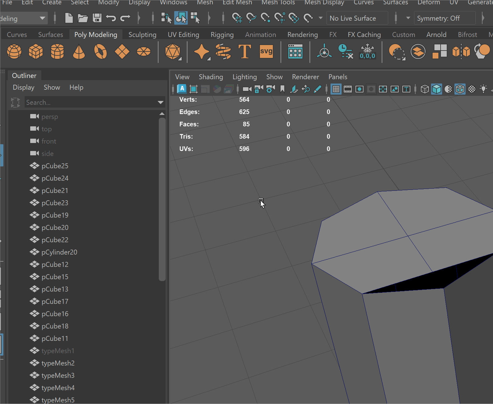
Marking Menus are context-specific and allow us to get easy access to all the functionality of Maya.
Marking menus can be activated using a variety of hotkeys with the Right Mouse Button.
You don't click in the marking menu. Instead, however, over the tool you want to access and release the right mouse button.
Holding RMB over an object, for example, allows to select different components.
Faces
To navigate to faces, hover over your model and hold the Right Mouse Button > Face.
UI TIP: You can use the same marking menu to return to Object Mode when you are done selecting on faces.
Modify
We can modify faces using the Move, Rotate and Scale tools.
Use the Move, Rotate and Scale tools to create the object on the right.
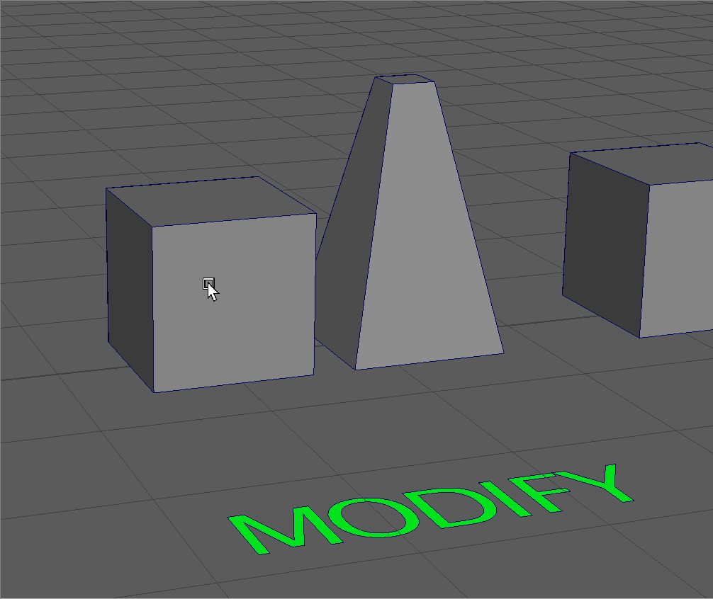
Delete
We can also delete faces to allow for interesting shapes.
Use the Move and Delete tools to make the shape on the right.
Reversing Normals
Hotkey: Hold Shift + RMB > Face Normals > Reverse Normals
Notice that the inside of this box is black, while the outside is gray.
This is because faces have no thickness to them, they are infinitely thin!
The direction the face is facing is the normal direction. We always want the normal direction to be facing outwards towards our camera.
To select all the faces on our model:
Click on the model
Right click navigate to Face Mode
Press Ctrl+Shift+A to select all the faces.
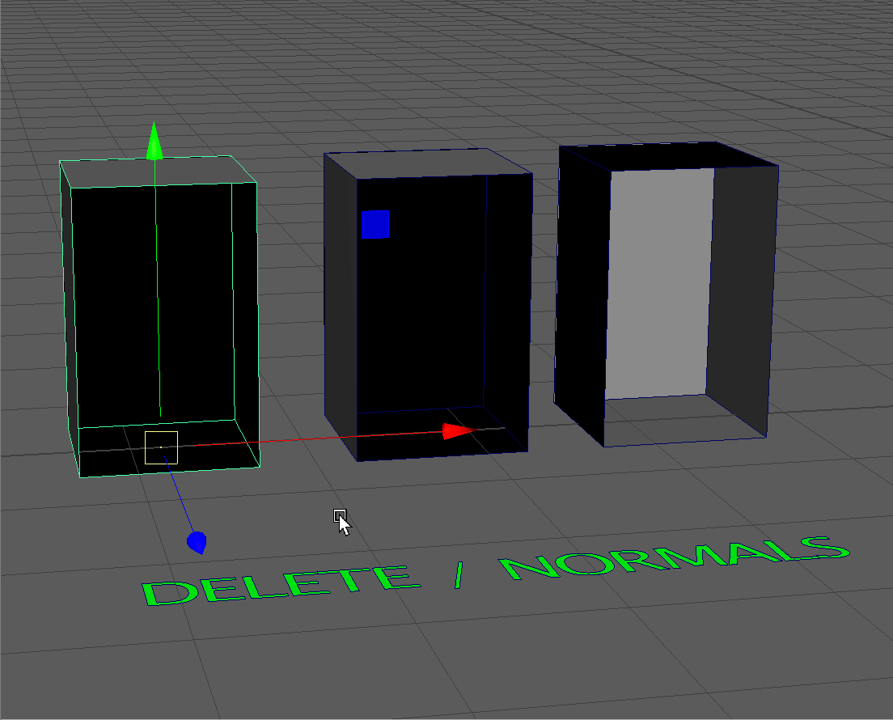
Hold Shift+RMB over our model. This will bring up a marking menu of contextual tools related to the component mode that we are in. In our case, it will bring up tools related to faces.
To reverse our normals:
Press and hold Shift+RMB over our model
Navigate to Face Normals
Navigate to Reverse Normals
Extrude
The most important tool associated with faces and for poly-modeling in general, is the Extrude tool. The extrude tool allows us to extrude additional faces from our model to build out geometry.
We can open the extrude tool by using the Shift+RightClick marking menu and then navigating to Extrude Face.
The Extrude tool can also be accessed by:
Ctrl+E
Shift+Drag on any gizmo in a component mode
Example of extruding with Shift+Drag
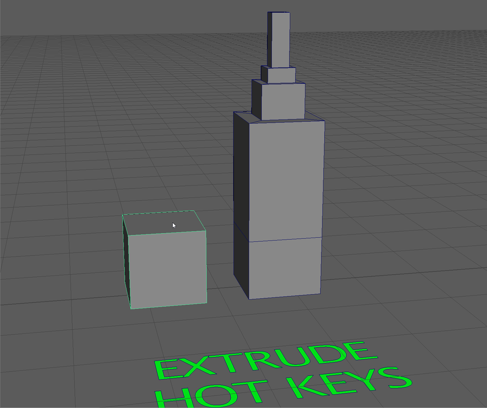
Thickness
In the pop-up box for the tool, we can use the Thickness parameter to extrude the selected face.
Offset
The Offset parameter allows us to inset our face.
Keep Faces Together
The Keep Faces Together parameter will allow us to extrude faces separately or as a single group.
Face Selection
We can use a particular face selection technique to select a large number of faces next to each other at once. Let's follow the below steps to make the model in the "face selection" area.
Create a new cylinder in your scene and move it over to the "face selection" area. 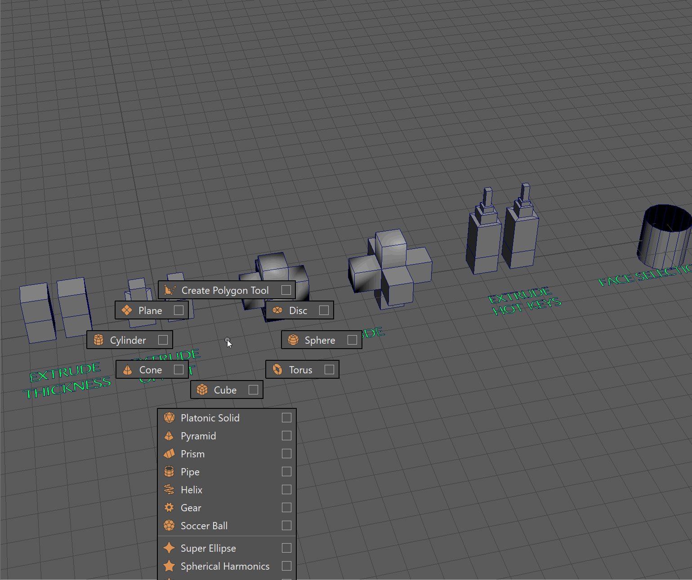
UI TIP:Use the Shift+RMB marking menu with nothing selected to quickly create new objects.
Change the number of sides on your cylinder to 16 to match the object on the right.
UI TIP: We can change the number of sides our cylinder has in the Channel Box.
Next, let's select everything but the top and bottom of our cylinder. We'll do this by selecting on face and then, hold Shift, double click on one of the faces next to our selected face.
Then, we'll press Ctrl+Shift+I to reverse the selection, followed by the Delete Key to delete our top and bottom faces. 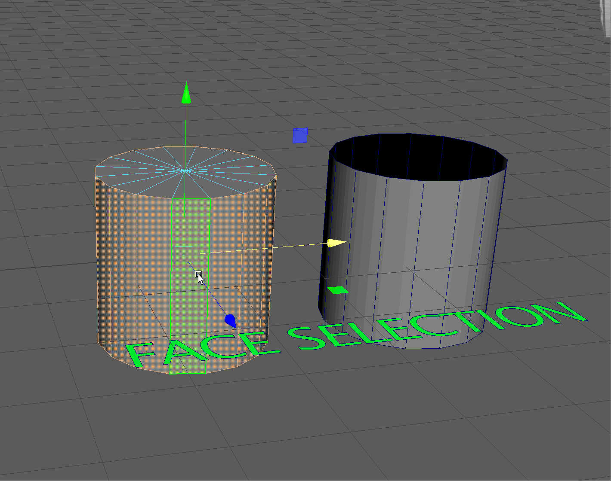
Edges
Each face is typically made up of four edges. A face with four edges is referred to as a quadrilateral or a "quad", for short. It is best practice when modeling to ensure your polygons are quads - in other words, each polygon should have four edges.
4 Sides, Quad = Great!
3 Sides, Tri = Okay in some situations.
5+ Sides, N-Gon = Should rarely appear on model and will often cause errors
The structuring and flow of edges to create faces on a model is topology.
Face Topology of Mrs.Incredible from The Incredibles. Notice on her ear we see what appears to be a tri. If we look closely, however, we can see it is actually a quad with four sides
Selecting Edges
To enter edge selection, we can hold the Right Mouse Button over our model and navigate up to Edge.
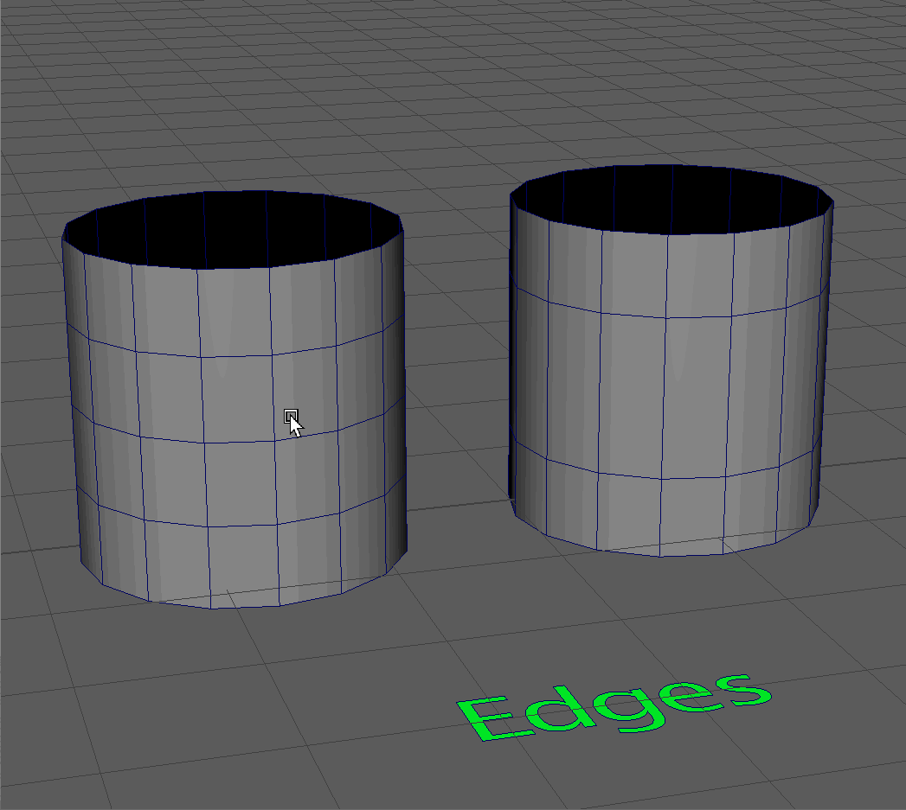
Edges attached together in an unbroken line are called an Edge Loop.
We can select an edge loop by double clicking on an edge that is part of that loop.
Edges adjacent to each other, but not connecting in a loop, are called an Edge Ring.
We can select an edge ring by clicking on an edge and then Shift+Double Click on an adjacent edge.
Delete
To Delete an edge loop, we use the special hotkey, Ctrl+Backspace. This hotkey will delete the edge loop and the vertices associated with it. Note in the gif below, we should not delete a single edge, as this will make an N-Gon. Instead, we should delete the whole edge loop.
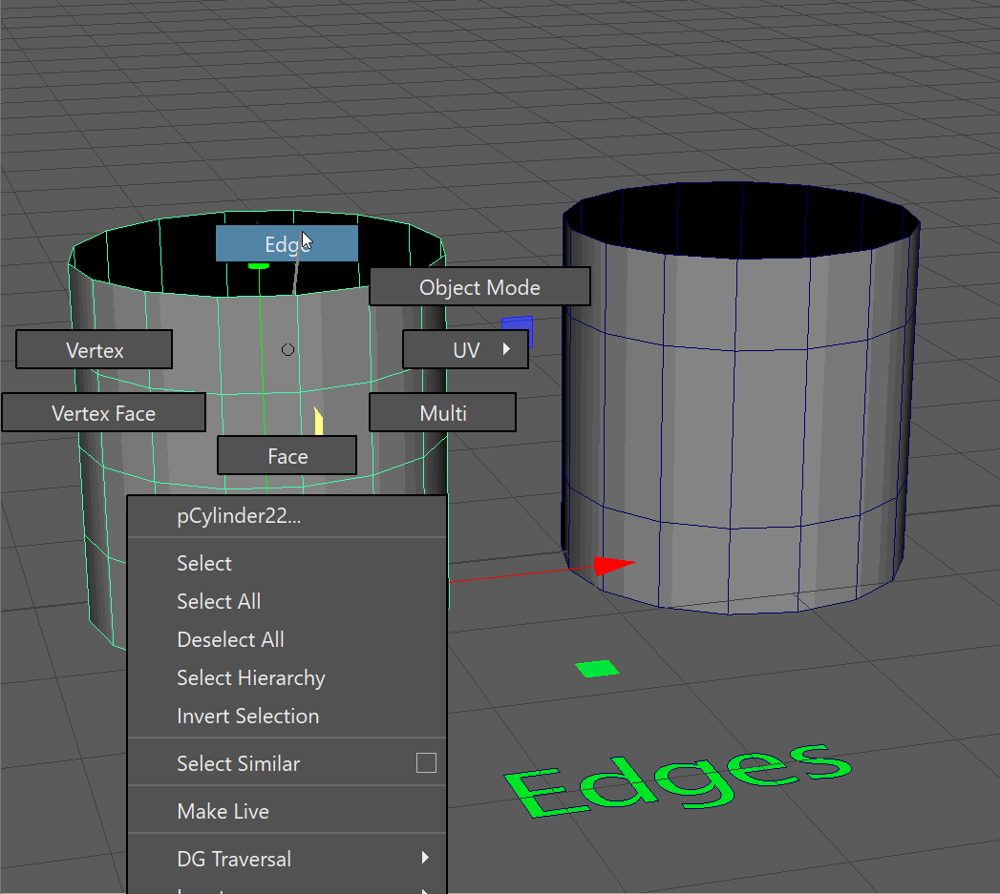
Modify
We can modify edges using our Transform, Rotate, Scale and Extrude tools.
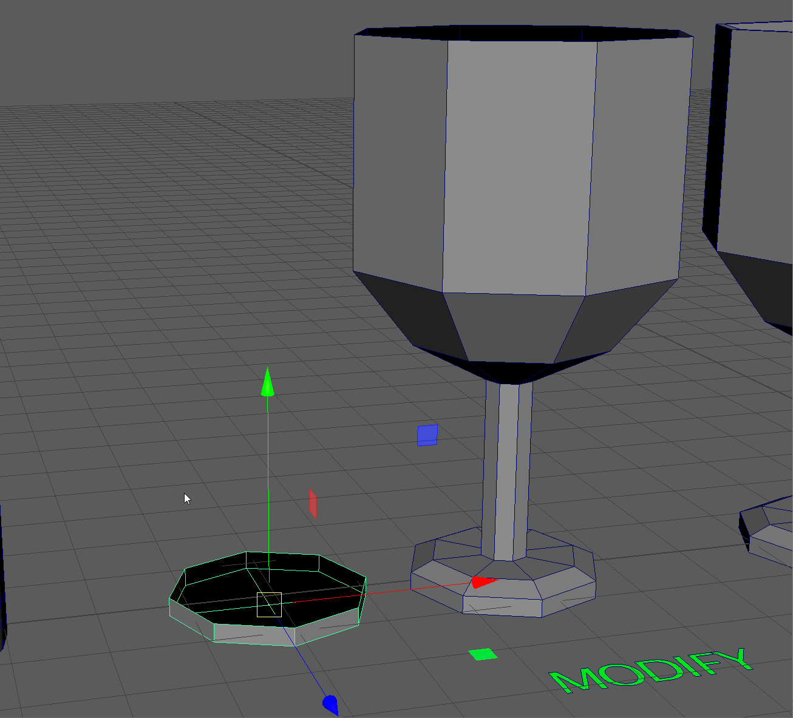
Notice that our glass is one-sided, meaning, it has no interior. We can use the Extrude tool in Object mode to give some thickness to our glass.
We'll extrude inward to keep the profile of our glass the same, so we'll need to flip the normals of all our faces to be pointing outwards toward the camera. Make sure when you extrude the glass that the faces on the interior of the stem don't overlap.
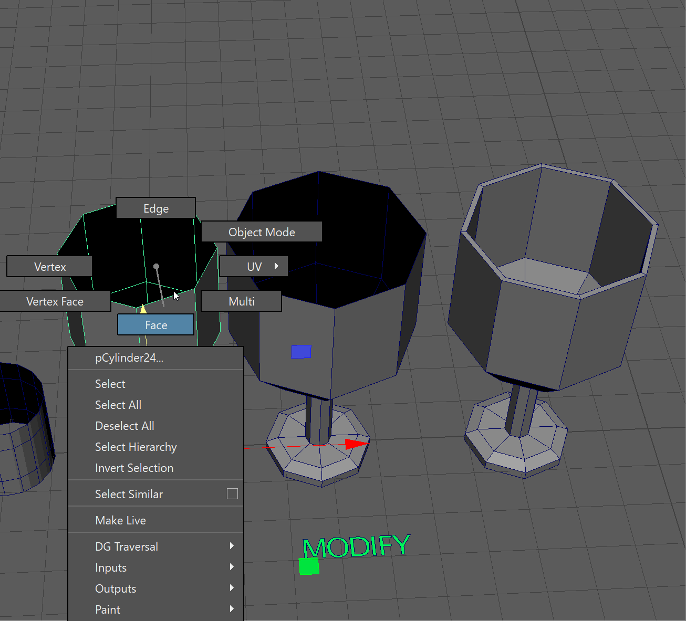
Insert Edge Loop
We can add edge loops to our model using the Insert Edge Loop Tool. Hold Shift+RMB over the model and navigate to the Insert Edge Loop Tool.
Hold Click + Drag on an edge to insert and position an edge loop. Release Left Click to place the edge loop. Insert edge loops to create the model on the right. Press Q to exit the insert edge loop tool.
We can also add edge loops to our model that are equally distant from one another. For this object, I want to be able to add in some basic windows and a door.
Let's start by opening the Insert Edge Loop Tool Settings. Hold Shift+RMB over the model and navigate to the small box next to the Insert Edge Loop Tool. This will bring up the tools settings.
In our settings, we can toggle on Multiple Edge Loops to insert a specific number of loops. Let's add 6 vertically and 7 horizontally.
We can also extrude our windows and door to match the model on the right.
UI TIP: When we turn on a tool such as the Insert Edge Loop Tool, that tool stays on until we exit it. The easiest way to exit a tool is by pressing the Q key to activate the selection tool.
Bridge
The bridge tool allows us to create a face using two edges.
To use the bridge tool, we can click on two edges and navigate to Bridge holding Shift+ Right Click
We can bridge multiple edges together by selecting an equal number of edges opposite one another.
Vertices
Vertices are an essential part of Polygon Modeling. Vertices define the end points of edges and the boundaries of faces.
In simple terms, vertices define our model. Take, for instance, the simple example of a cube. Each vertex of this cube is defined by its position in X,Y,Z space.
This is what a cube would look like if its back left corner were on the origin point.
Behind the scenes, in the code of the 3D modeling software, the cube might look something a bit more like this:
vertices=[(0,0,0),# 0: origin (bottom-back-left)(1,0,0),# 1: bottom-back-right(1,1,0),# 2: top-back-right(0,1,0),# 3: top-back-left(0,0,1),# 4: bottom-front-left(1,0,1),# 5: bottom-front-right(1,1,1),# 6: top-front-right(0,1,1)# 7: top-front-left]faces=[(0,1,2,3),# back face (Z = 0)(4,5,6,7),# front face (Z = 1)(0,1,5,4),# bottom face (Y = 0)(3,2,6,7),# top face (Y = 1)(1,2,6,5),# right face (X = 1)(0,3,7,4)# left face (X = 0)]
THOUGHT: Think back to the earlier image of the VW Bug being digitized. They entered all of these X,Y,Z coordinates manually.
Here, our vertices are defined by X,Y,Z coordinates, and our faces are defined by grouping together those different vertices.
When we manipulate our 3D model, we change how this model looks in code.
Modify Vertices
Navigate to the Vertex selection tool by holding RMB over the first model and navigating to Vertex.
We can select multiple vertices by Clicking + Dragging over a number of vertices. Use this tool to select multiple vertices and manipulate them to match the model on the right. Make sure to hold Shift when selecting the second set of vertices.
Weld Vertices
The most crucial modification tool we can use with vertices is the Weld tool. This allows us to merge two or more vertices together into a single vertex.
This operation allows us to create "water-tight" geometry so our edges and faces are connected.
Merge Vertices Tool
Begin by snapping the top open vertex of our cylinder to the top back vertex. Remember to use the V Key to activate Vertex snap.
NOTE: Even though the vertices are snapped together, they are still two separate vertices!
Let's merge these vertices into a single vertex using the Merge Vertex tool. Select the two vertices using the selection box, and use Shift + RMB to navigate to Merge Vertices -> Merge Vertices. For vertices that are right on top of each other, a safe Distance Threshold is .001. The Distance Threshold is how close the vertices need to be to each other to merge together. Most of the time .01 is fine, you'll mostly be changing this number when merge vertices leads to unintended effects. 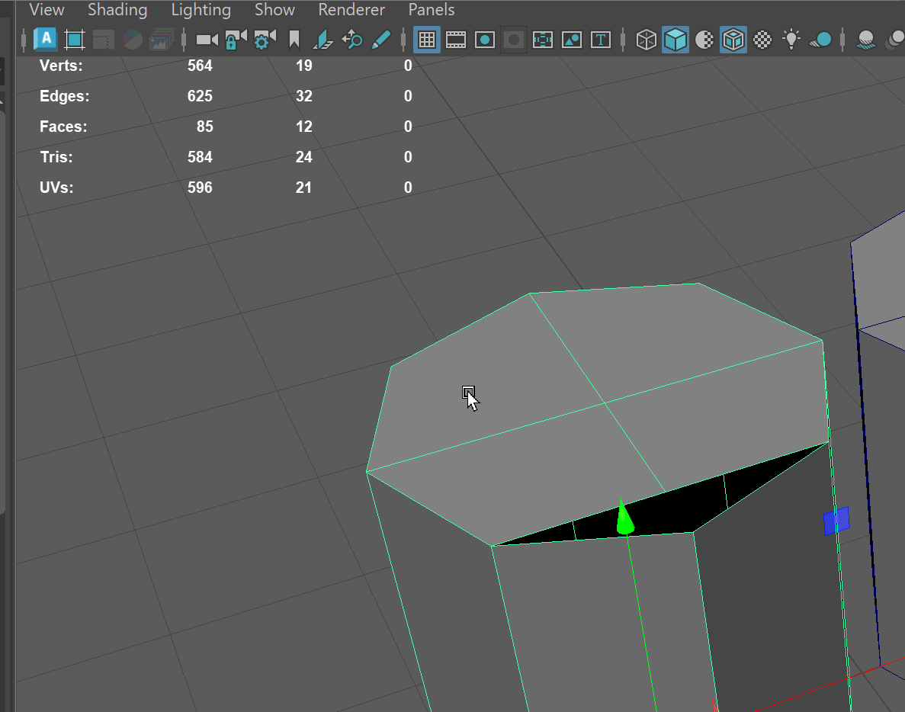
UI TIP: When entering data into a dialog box in Maya, use the Enter Key on your keyboard to confirm the selection.
If we enter face selection and move one of our back top faces, we can see all of our faces are now properly connected. The below gif shows the difference between having our vertices merged versus not merged.
Target Weld Tool
The other tool that we can use when we want to move a vertex to merge with another is the Target Weld Tool. The target weld tool allows us to grab a vertex and snap it to another to weld them together.
Hold Shift+RMB on your model in Object selection mode and navigate to Target Weld Tool.
Click + Drag the bottom open vertex to the bottom center vertex to merge them together. 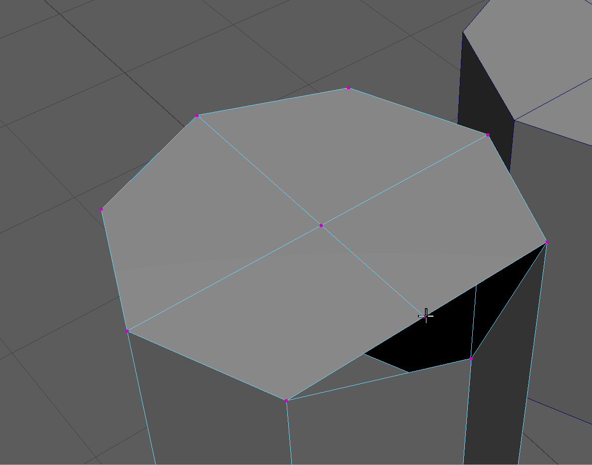
Press Q to activate the selection tool and exit the Target Weld tool.
World vs. Object vs. Component Space
World Space
You might have noticed that when we enter our Move tool, our gizmo always aligns with the direction of our world coordinates. Meaning Y is always Up, X is always Right, and Z is always forward. If, for example, I rotate the below sphere slightly and then switch to the Move tool, my gizmo doesn't follow the rotation of my object; it instead follows the world.
This is known as World Space
Component Space
Component Space, instead, will match my gizmo to the Normal Direction of my component. Remember, normals are the direction a component faces forward.
For example, the normal direction of the vertices on a low poly sphere will look something like this:
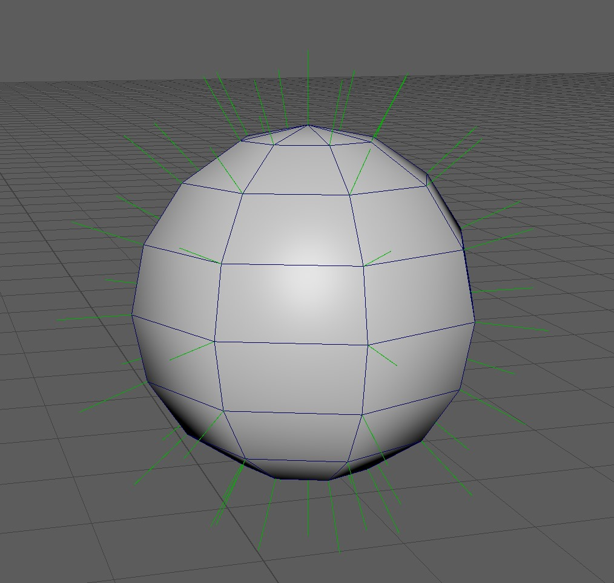
Component space Example:
Select a vertex on the first sphere within the "Component Space" section and move it upward. Notice how it moves in world space. Press Ctrl + Z to undo the movement.
Make sure the Move tool is active and hold Ctrl+Shift+RMB to open the settings for our move tool. Notice how world is selected and navigate to "Component". 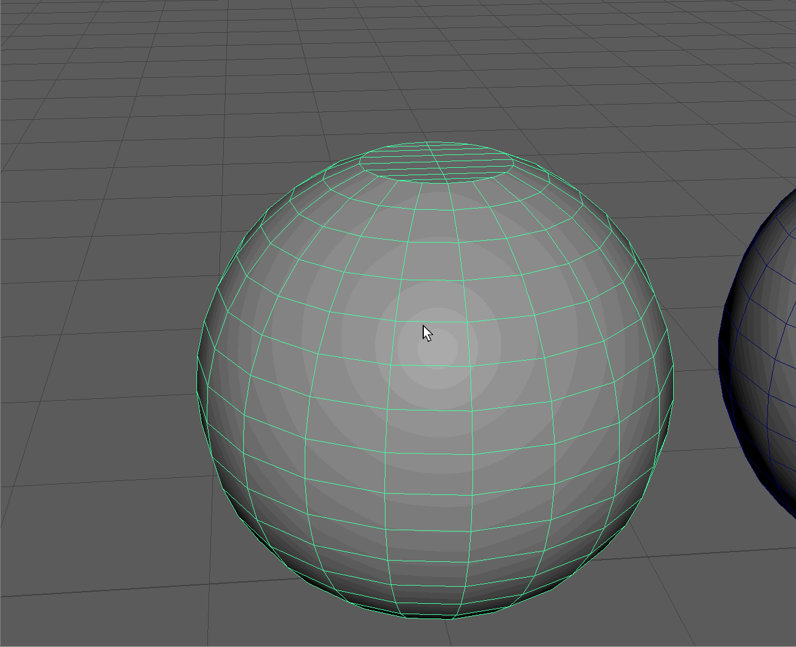
Now, move a vertex and note how it moves along the vertex's normal. Press Ctrl + Z to undo the movement. 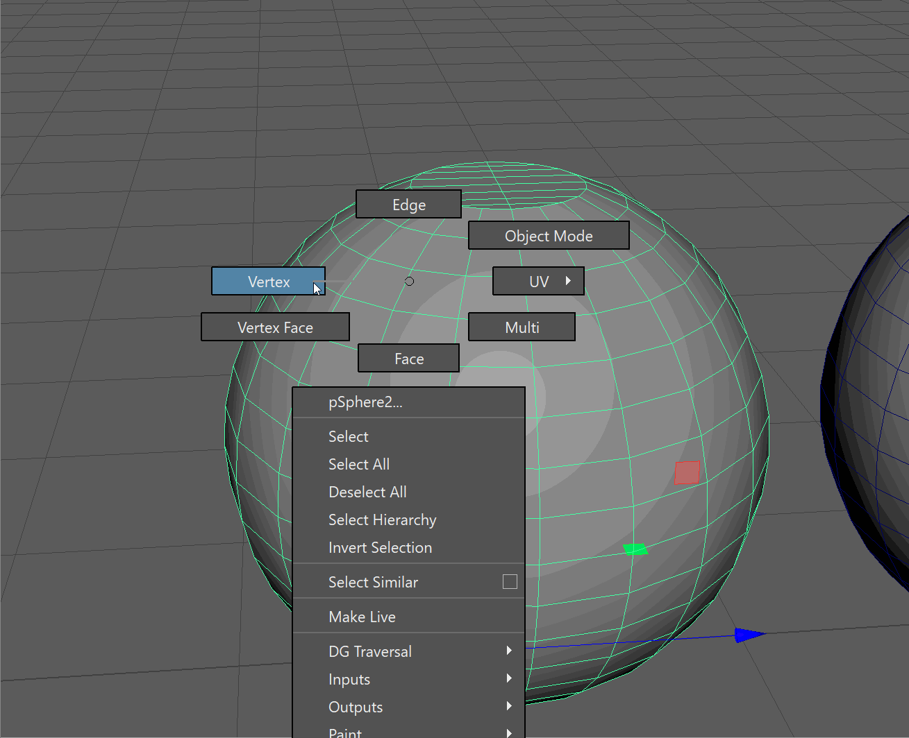
Move the Vertices on the sphere to make the model on the right.
UI TIP: Component space can also be used with faces and edges!
Object Space
Object space is similar to component space, but instead of following the specific normals, it follows the rotation of an object.
Object Space Example:
Navigate to the first cylinder in the "Object Space" section. Switch back to World Space and test the movement of your object. Then switch to Object Space and see its effects. Remember to hold Ctrl+Shift+RMB to switch between different spaces. 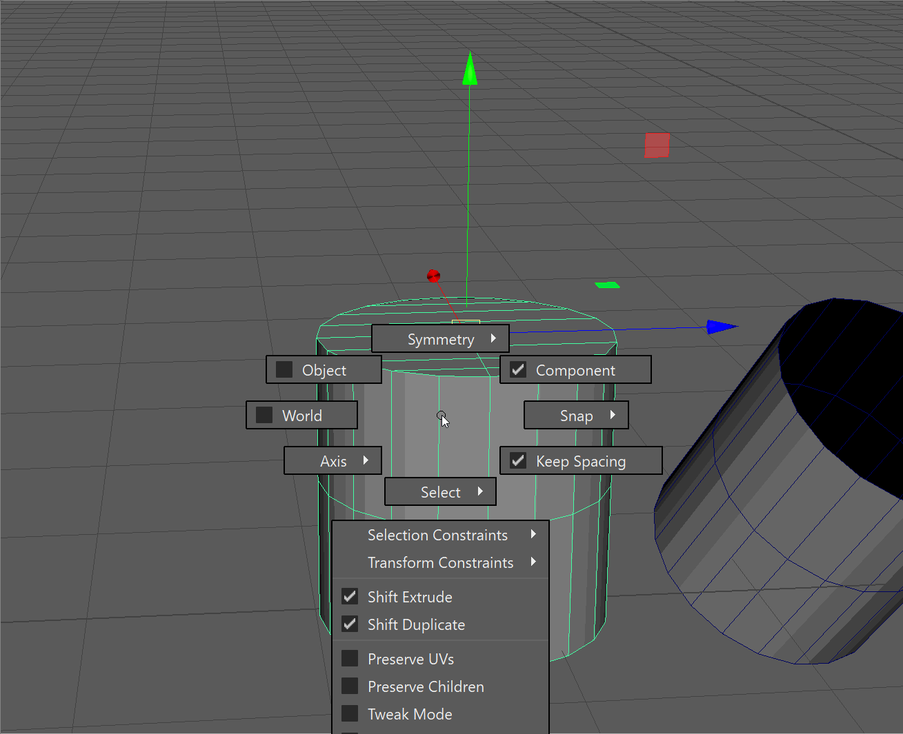
NOTE: It appears that our gizmo doesn't change. However, on closer inspection, we can see it rotates 90 Degrees, matching the RotateY value in our Channel Box.
Looking at the bottom cylinder to the right within Object Space, we can see the gizmo matches the rotation of our object. Use the V Key to snap our the bottom cylinder to the top one, moving it in Object Space. 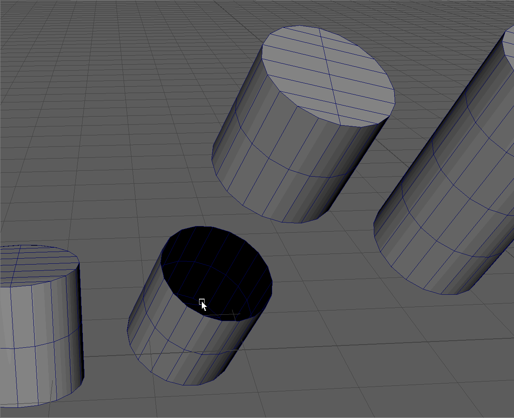
Combine
Hotkey: Select both objects, Shift+RMB > Combine
Let's say for those two cylinders, we wanted to merge them. If we tried, we would notice that nothing would happen. That is because we can only weld together two or more vertices that are on the same object. To combine two objects together to make one object, we can use the Combine tool.
Combine Example:
Snap the two cylinders together, select them both, and then hold Shift+RMB to open our object tools, then navigate to Combine. 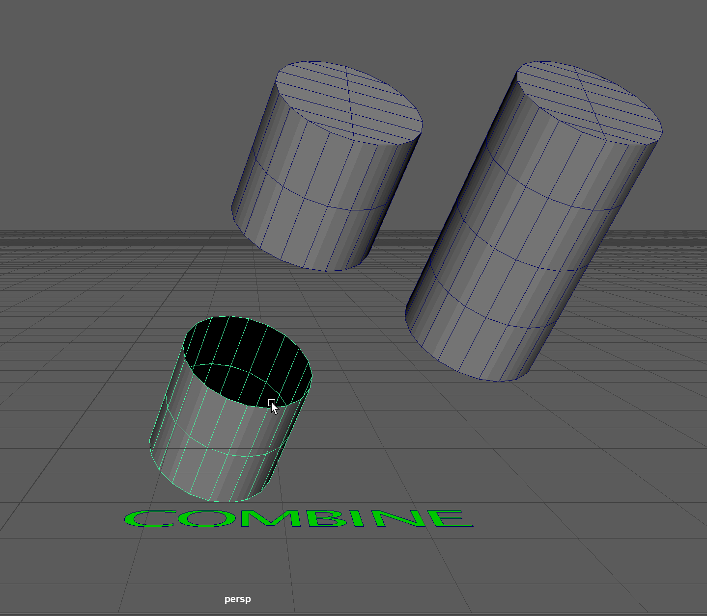
Now, weld all the vertices together using the Marge Vertices tool. Navigate to the tool using Shift+RMB in vertex selection mode.
Notice that when we combine our cylinder, our Object Space transform matches our world coordinates. The Combine tool freezes our transformations, in other words, sets all of our channel box values to 0. Our object now has a rotation of 0, so the object space gizmo now matches perfectly with world space.
Our Object Space after combining 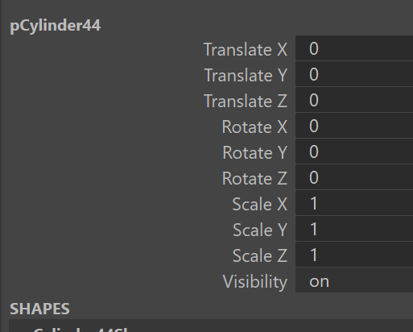Our Channel Box after combining
Freeze Transformations
Freeze Transformations will set the channel box values of an object back to 0.
We can manually freeze the transformation on an object by navigating to the Freeze Transformation tool. Select the first cylinder in the "Freeze Transformation" section then navigate to Display -> Freeze Transformations. Notice how the Channel Box values reset to 0.
History/Delete History
Hotkey:Edit -> Delete by Type -> History
Everything in Maya is connected! Behind the scenes, every tool we used on our model connected through nodes and stored in our object's History.
NOTE: If something starts going wrong with your model, or tools begin acting strangely, it could be because the history of your model is influencing your current actions. It is good practice in Maya to occasionally delete the history of your model if you no longer need it!
We can see this in our Channel Box under inputs:
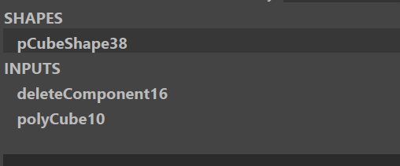
This object had one component deleted.
Or, we can see our history in our node editor.
We don't need to worry too much about the node editor for this class, but just to show you a bit of the back end of what is happening in Maya:
I made a new cube and deleted one face. You can see this in the node editor below:
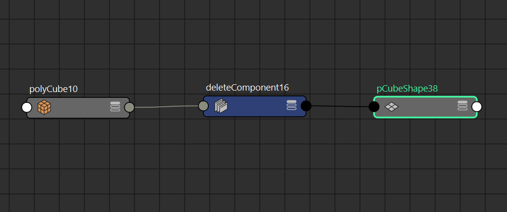
I then combined the two cubes together, and made a mess like this, showing the two cubes combining:
Finally, I deleted the History on my new model, essentially, all the past nodes so that now only my new object remains:
Delete History Example:
Select both Cubes and combine them together.
Select the new object and navigate to Edit -> Delete by Type -> History
Circularize Components
Circularize components is a very helpful tool with Maya. It allows us to take any components and average their shape into a circle. This is especially helpful for making our tree branches.
With faces selected, navigate holding Shift+RMB to Circularize Components.
You'll notice this will make somewhat of a mess. However, don't worry, we have learned the tools to clean it up!
Begin by opening up the Scale tool, and scaling the faces down using the center Gizmo.
Then use the Rotate tool to match the edges beyond the circle to flow with the rest of our topology.
Finally, use the Move tool to pull out the circle slightly.
NOTE: You may need to be in Component Space for the Move, Rotate, and Scale tool to have the intended effects.
Delete the faces and begin extruding out the edge loop to make a new branch. You may notice you need to adjust the scale of your edge loops.
Soften Edges
To soften our edges, in object mode navigate holding Shift + RMB to Soften/Harden Edges -> Soften Edge.